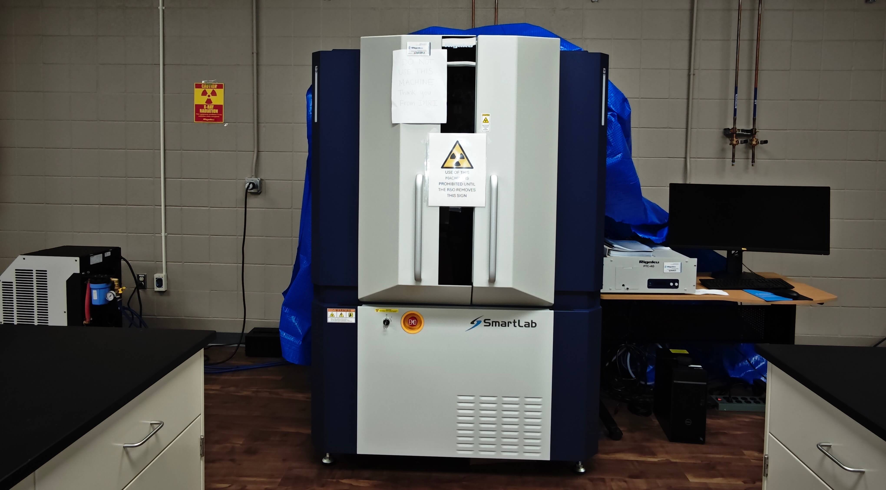
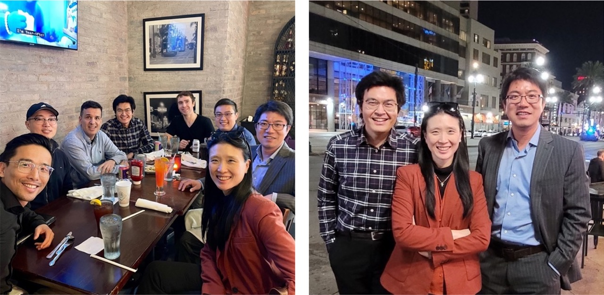

News Archive, 2025
• 2025.12: Dr. Hou served as a proposal reviewer for the American Society for Engineering Education (ASEE) eFellows Program.
• 2025.11: Dr. Hou gave an invited seminar at the University of Connecticut. Many thanks to UConn MSE Head Dr. Dongare, the faculty members, and the students.
• 2025.10: Dr. Hou attended the MS&T Conference in Columbus, OH, and the AIChE Annual Meeting in Boston, MA, and gave an invited talk on "Nanomaterials for Energy Storage and Conversion."
• 2025.10: Dr. Hou served as a proposal reviewer for NSF.
• 2025.09: Dr. Hou organized a workshop at the 2025 SSRL/LCLS Users' Meeting for SLAC National Accelerator Laboratory in Menlo Park, CA.
• 2025.09: After national competition, Dr. Hou received the NSF EPSCoR Research Fellowship. See the press release. This very competitive fellowship supported us to address important scientific questions in solid-state battery design, in collaboration with Brookhaven National Laboratory. More about this program
• 2025.08: Dr. Hou was invited to serve on the NSLS-II Proposal Review Panel.
• 2025.06: With partnership, Dr. Hou got the chance to attend IEEE INFOCOM in London, UK and IPDPS 2025 in Milan, Italy. Shared ideas with experts in parallel computation for better materials science. It was a memorable experience in Europe.
• 2025.05: Dr. Hou accepted the invitation from the RSC Applied Interfaces Emerging Investigator collection.
• 2025.03: Dr. Hou was honored to serve as organizer and division representative for the first-ever ACerS Spring Meeting in Bellevue, WA, in 2026.
• 2025.03: Our single-PI proposal was selected for funding by SC EPSCoR. The project focused on implantable medical devices and healthcare.
• 2025.02: Dr. Hou chaired a symposium session at the Electronic Materials and Applications (EMA2025) conference and gave an invited talk on "Defects and Transport in Ceramics."
• 2025.02: A postdoc position opened at AMIC. (Update: filled)
• 2025.01: Our collaborative proposal to CU-SRNL ELI was selected for funding. It allowed us to acquire a cutting-edge 3D X-ray microscopy system to study advanced materials and systems. The project was led by Dr. Konstantin Kornev and Dr. Kyle Brinkman.
News Archive, 2024
• 2024.12: Dr. Hou accepted the invitation from the Journal of Materials Chemistry A Emerging Investigator Series.
• 2024.11: A collaborative work was accepted for publication in ACS Sustainable Chemistry & Engineering. Led by Dawei Xia and Dr. Feng Lin at Virginia Tech.
• 2024.10: Dr. Hou chaired a symposium session at the Materials Science & Technology (MS&T24) conference and gave an invited talk on "Energy Materials for Sustainable Development."
• 2024.09: Dr. Hou started serving on the ACerS Basic Science Division Committee.
• 2024.08: A collaborative work was accepted for publication in the Journal of the American Chemical Society (JACS). Led by Dr. Linqin Mu at ASU, Dr. Raphaële Clément at UCSB, and Dr. Feng Lin at Virginia Tech.
• 2024.07: Our proposal was awarded by Brookhaven National Laboratory for multiple visits to this DOE facility. We performed synchrotron experiments on batteries.
• 2024.06: Dr. Hou served as an NSF panelist and lead reviewer for the EPSCoR funding competition.
• 2024.06: A collaborative work was accepted for publication in Advanced Energy Materials. Led by Dawei Xia and Dr. Feng Lin at Virginia Tech.
• 2024.05: Dr. Hou chaired the "Na & K Ion Batteries" session at the 245th ECS Meeting.
• 2024.05: Dr. Hou attended the 2024 NSF EPSCoR PI Meeting in Alexandria, VA.
• 2024.05: Dr. Hou attended the 2024 NSF Engineering CAREER Proposal Workshop.
• 2024.04: Our website went online.
• 2024.03: Dr. Hou organized a symposium at the ACS Spring 2024 meeting in New Orleans, LA.
• 2024.01: Dr. Hou joined the Department of Materials Science and Engineering at Clemson University.
• 2023.09: Dr. Hou organized a workshop at the 2023 SSRL/LCLS Users' Meeting for SLAC National Accelerator Laboratory in Menlo Park, CA.
Highlights, 2024

• The SmartLab SE System from Rigaku was established at IMRI, UL Lafayette, supported by Louisiana BoRSF. Dr. Hou led the configuration and acquisition effort in 2023 and is proud to have made it happen.• To the best of our knowledge, for the first time universities in Louisiana were able to conduct in situ and operando Pair Distribution Function (PDF) analyses dedicated to disordered materials on campus.

• Dr. Hou organized the symposium "Energy Storage Systems: In-Situ Characterization Studies" with Dr. Yijin Liu from UT Austin. The symposium was hosted at the ACS Spring 2024 meeting of the Energy and Fuels Division (ENFL) in New Orleans, LA.• With a theme of "Many Flavors of Chemistry," the conference featured 29 technical divisions and 11,779 accepted abstracts, including 7,389 oral and 4,390 poster presentations.
More to come...